Hello Friends and Members of Chorlton Bikes,
We're really glad you're here. This newsletter is a chance to share what we've been up to - our riders, our partners, and the difference we're making together in Chorlton and beyond.
May has been a month of new partnerships, community events and exciting plans taking shape for the summer. Here's what we've been up to.
May
2026
With June's Celebration of Cycling just around the corner, we've been busy preparing for local events, supporting community partners and continuing our work across Chorlton and Greater Manchester.
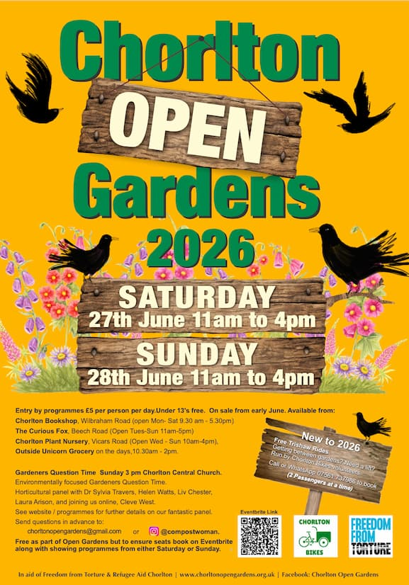
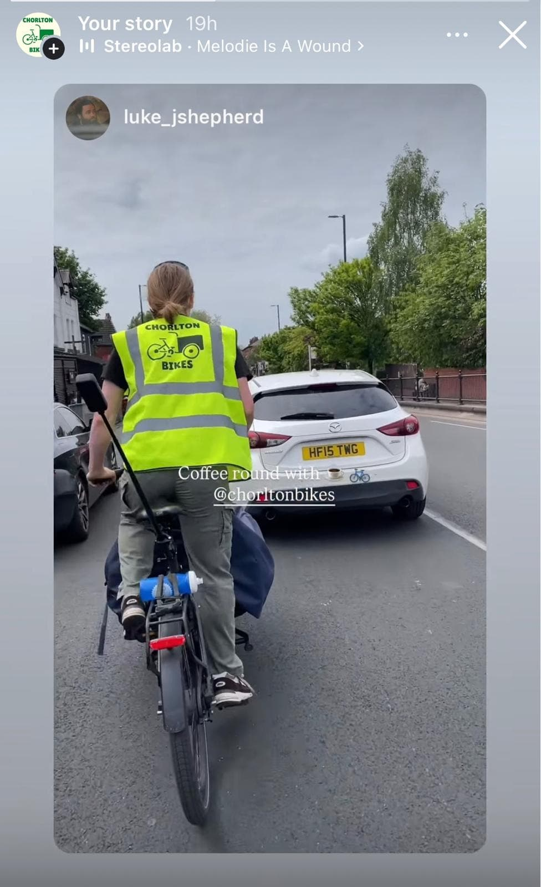
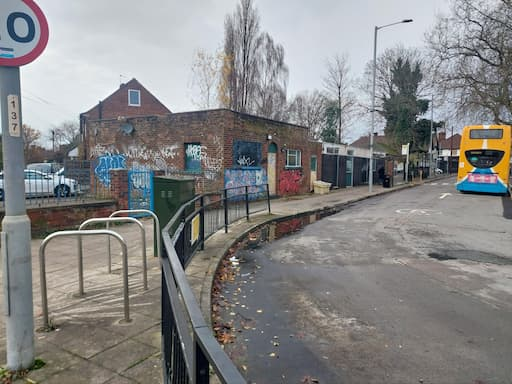
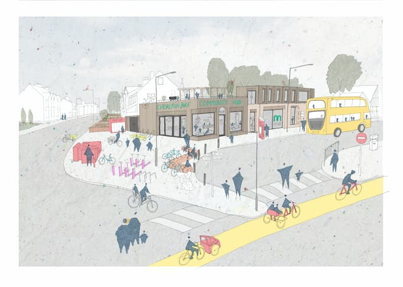
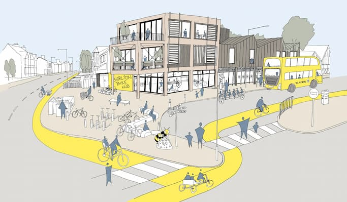
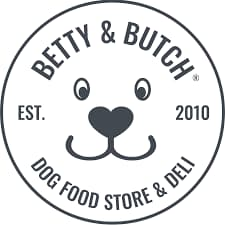
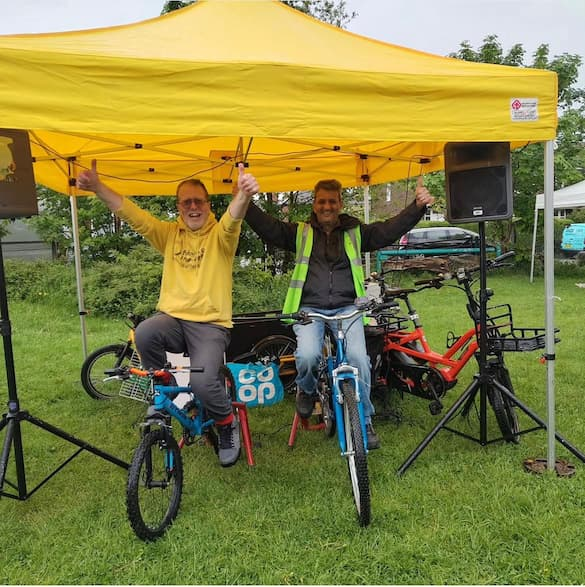
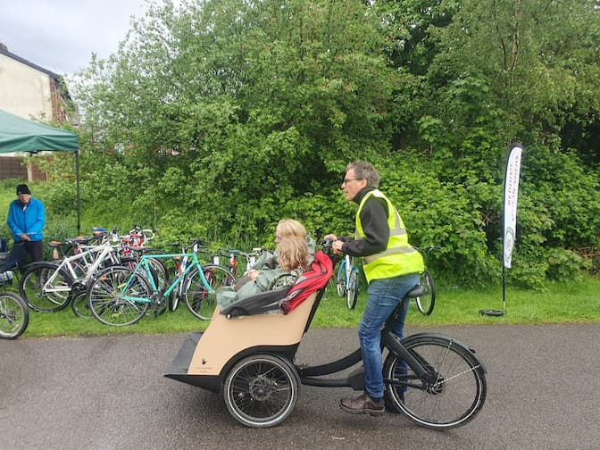
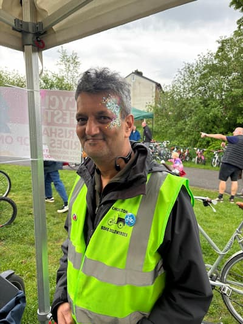
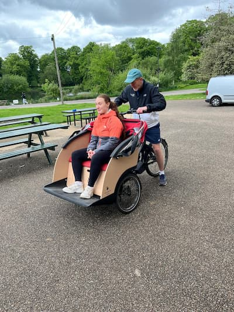
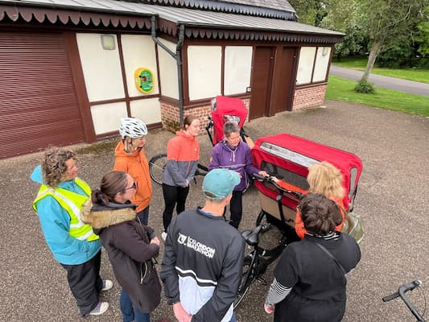
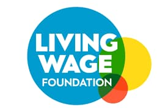
Thank you to everyone for the continued energy, care and commitment that keeps Chorlton Bikes moving forward.
Whether you're riding, volunteering, donating, collecting coffee grounds, piloting a trishaw or simply spreading the word, you're helping us build a stronger and more connected community. Here's to a busy June and a fantastic Celebration of Cycling month 🚲💚